This function generates a discrete color palette from colors, starting from a given color. With base parameters, this function generates 200 colors, based on their luminance and saturation, chosen to be maximally distinct.
Arguments
- n
Numeric. The number of colors to return. If
NULL, returns all the colors.- starting.color
Character. The name of the color to start the palette from. The subsequent maximally distinct colors will then be generated, meaning choosing different starting colors produce different palettes.
- exclude.hues
Character. The names of the shades of colors to exclude from the palette (for example, 'green' will exclude all shades of green).
- offset
Numeric. The number of colors to skip from the start of the palette.
- lum.range
Numeric. The range of luminance values to consider for the palette. Contrasted colors have low luminance while pastel colors have high luminance.
- sat.range
Numeric. The range of saturation values to consider for the palette. Washed-out colors have low saturation while vivid colors have high saturation.
Examples
# Example 1: default parameters
show_col(Right_Palette(), labels = FALSE)
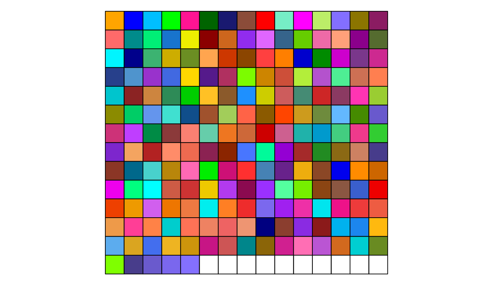
# Example 2: a subset of colors
show_col(Right_Palette(100), labels = FALSE)
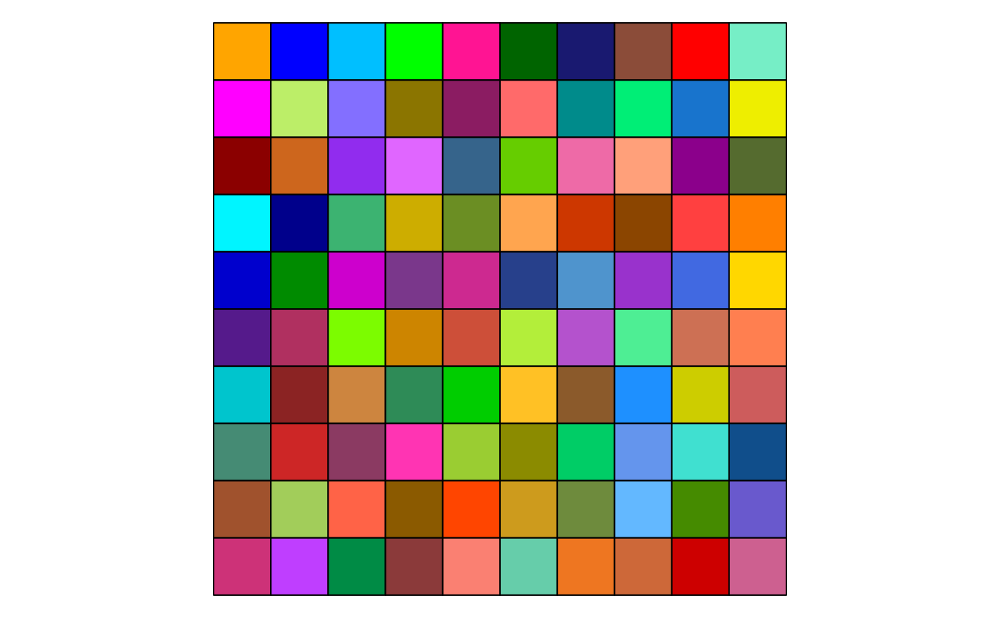
# Example 3: with offset, skipping the first 10 colors
show_col(Right_Palette(100, offset = 10), labels = FALSE)
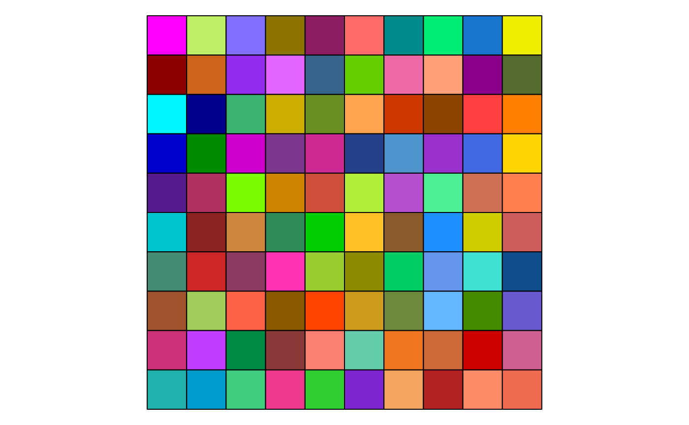
# Example 4: different starting color
show_col(Right_Palette(100, starting.color = "green"), labels = FALSE)
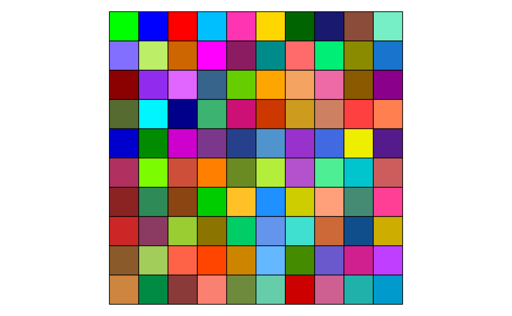
# Example 5: pastel colors palette, high luminance and low saturation
show_col(Right_Palette(30, lum.range = c(0.7, 1), sat.range = c(0, 0.3)), labels = FALSE)
#> 'orange' is not present with the current parameters, using 'antiquewhite' instead
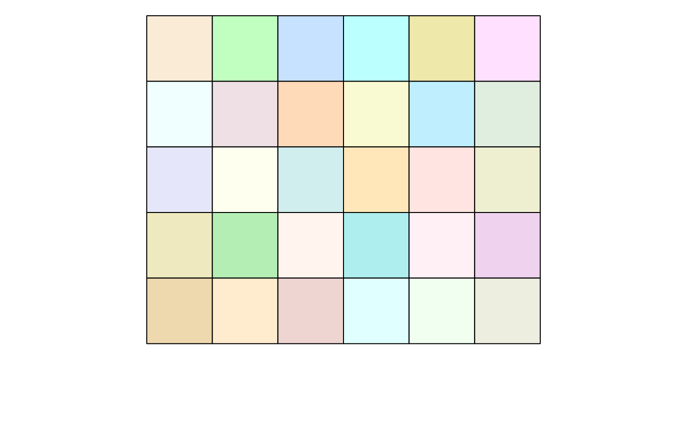
# Example 6: contrasted colors palette, low luminance and high saturation
show_col(Right_Palette(30, lum.range = c(0, 0.4), sat.range = c(0.6, 1)), labels = FALSE)
#> 'orange' is not present with the current parameters, using 'blue' instead
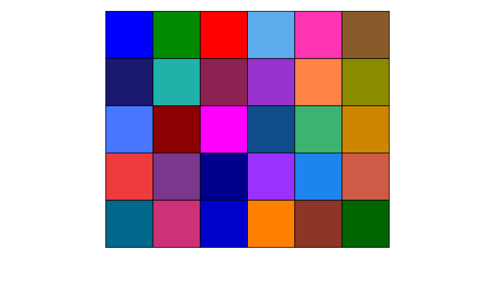
# Example 7: washed-out colors palette, low luminance and low saturation
show_col(Right_Palette(30, lum.range = c(0, 0.4), sat.range = c(0, 0.4)), labels = FALSE)
#> 'orange' is not present with the current parameters, using 'antiquewhite4' instead
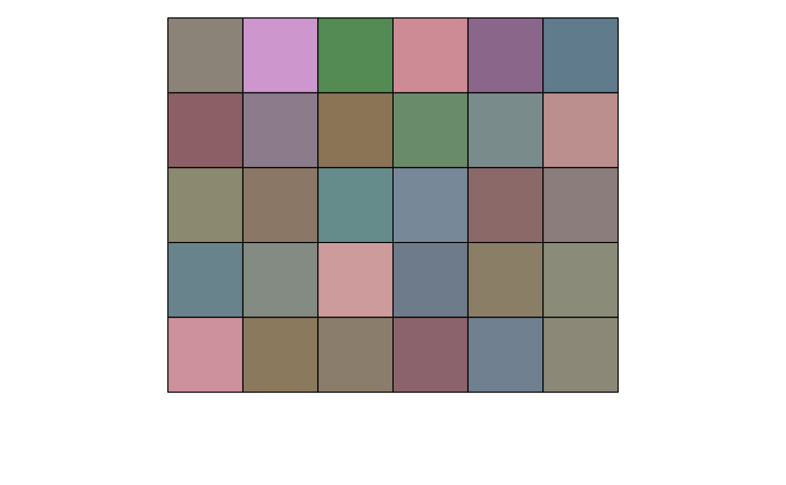
# Example 8: vivid colors palette, high luminance and high saturation
show_col(Right_Palette(30, lum.range = c(0.5, 1), sat.range = c(0.5, 1)), labels = FALSE)
#> 'orange' is not present with the current parameters, using 'aquamarine' instead
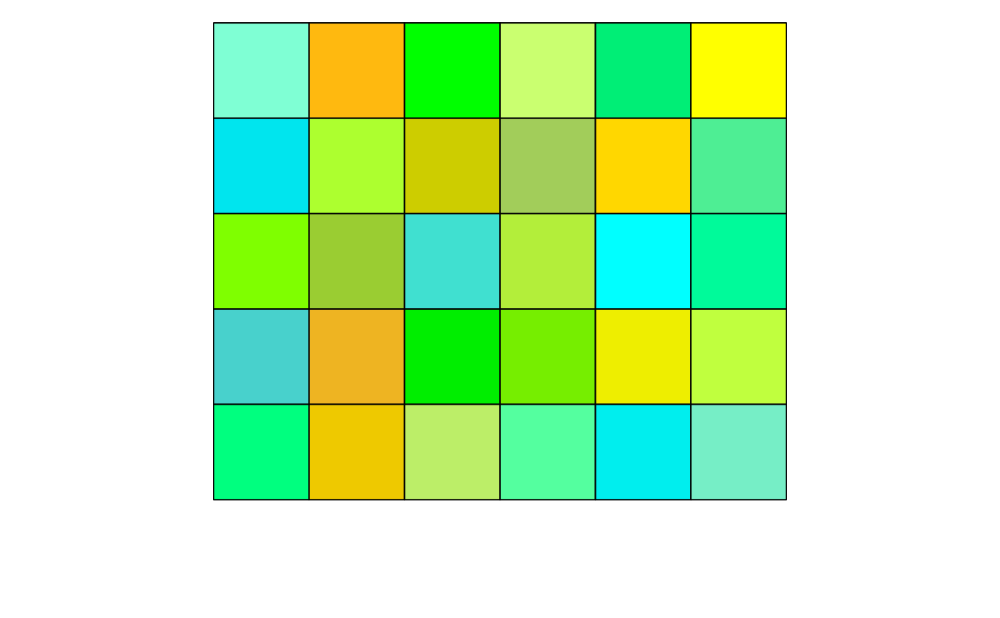
# Example 9: excluding some shades of colors
show_col(Right_Palette(100, exclude.hues = "blue"), labels = FALSE)
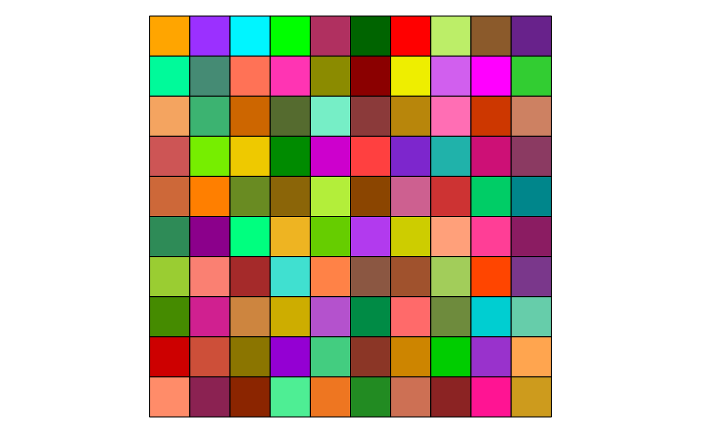
show_col(Right_Palette(100, exclude.hues = "red"), labels = FALSE)
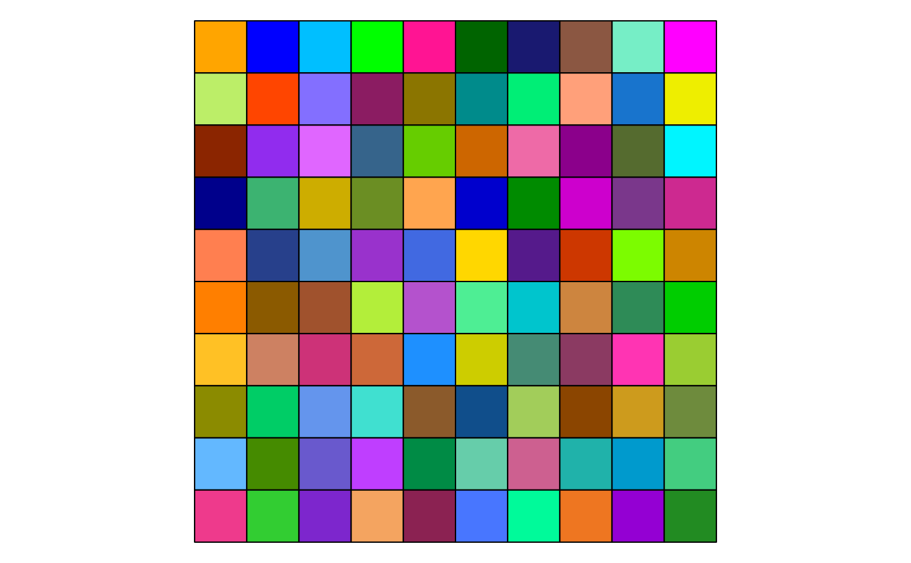
show_col(Right_Palette(100, exclude.hues = "green"), labels = FALSE)
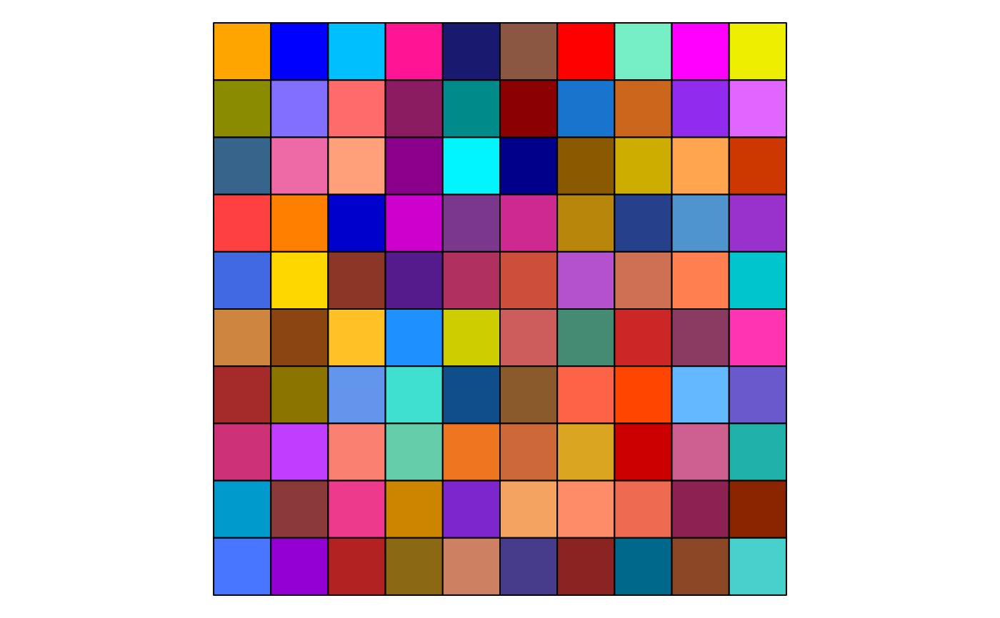
show_col(Right_Palette(20, exclude.hues = c("red", "orange", "yellow", "cyan",
"blue", "purple", "pink")), labels = FALSE)
#> 'orange' is not present with the current parameters, using 'chartreuse' instead
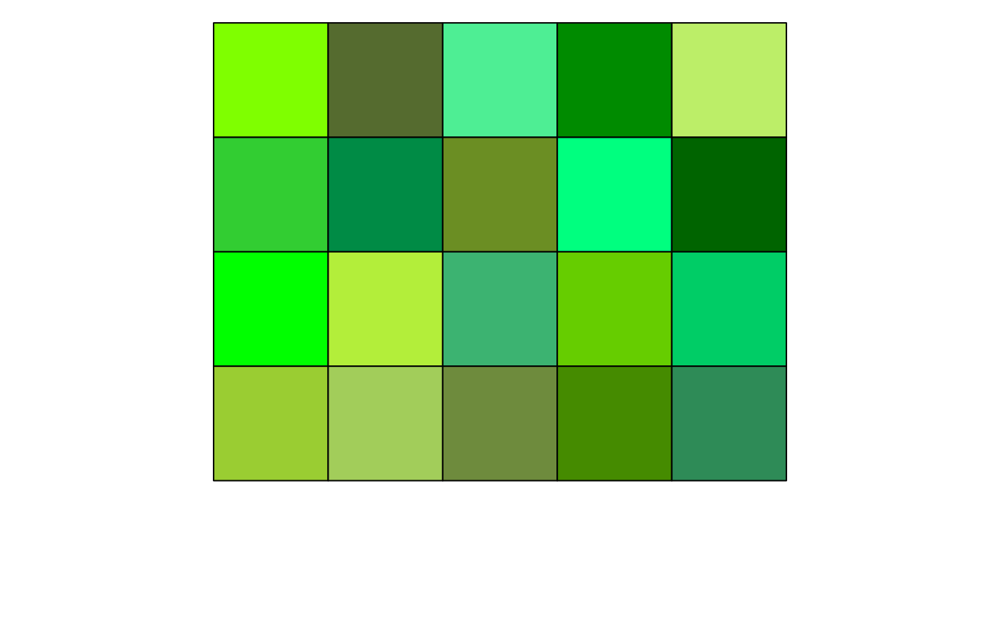